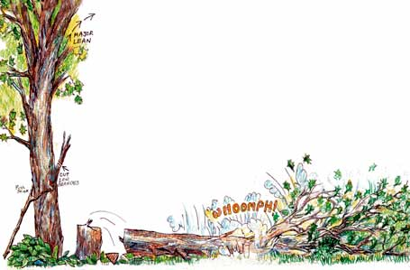
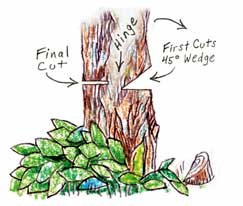

To cut down a tree safely, prepare carefully and cut correctly.First determine which way the tree wants to fall: check the lean ofthe tree, the shape of the leafy crown, whether there is anyobvious rot in the trunk and which way the wind is blowing.
Clear the area around the tree you will cut and establish an escaperoute. Also, cut off any low-hanging branches that may be in theway. The best tool to use is a tubular-frame bow saw or achainsaw.
For small trees up to about 6 inches in diameter, cut aboutthree-quarters of the way through the tree, then stand to one sideand push the tree over. Pushing with a forked stick is particularlyeffective.
The traditional way of felling bigger trees is shown above. Thefirst two cuts are on the side where you want the tree to fall. Thehorizontal and down-angled cuts, about a third of the way throughthe trunk, create a wedge-shaped opening. The final back cut, madeon the opposite side about two inches above the first horizontalcut, will bring the tree down. Aim to leave a hinge of about twoinches between the wedge and the back cut. This hinge will guidethe tree to fall where you want, if you keep the plane of the hingeperpendicular to the direction of the fall. When you hear the hingecrack, stop sawing and move away from the tree as it falls.
|
 |
 |
|